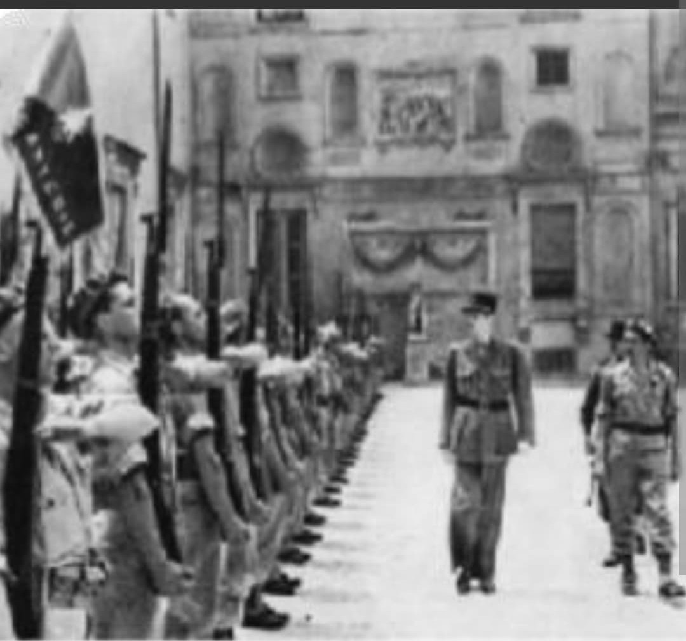
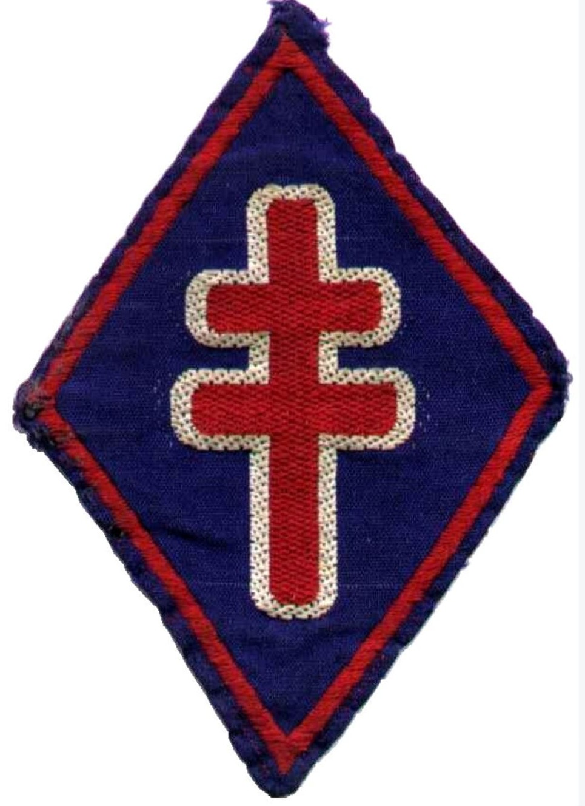
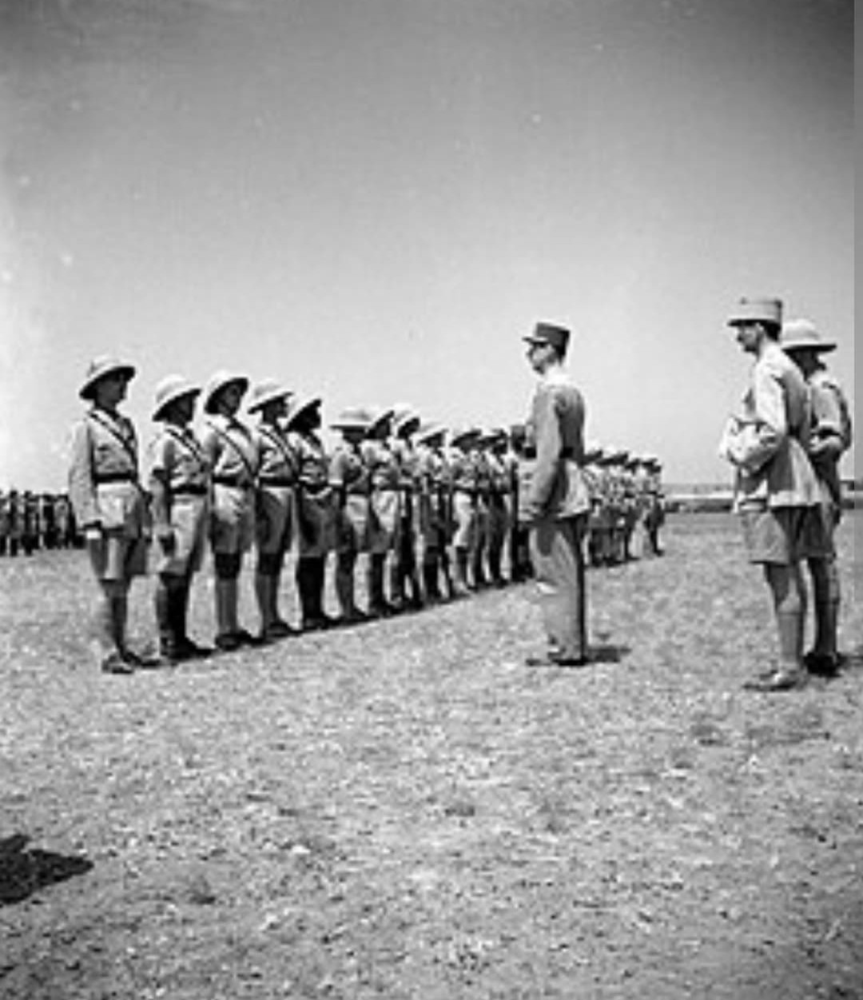

De la résistance héroïque de Bir Hakeim aux campagnes d'Italie, de Provence, des Vosges et de l'Authion

Symbole absolu de la France combattante et de la fidélité à l'Appel du 18 juin du général de Gaulle, la 1re Division Française Libre (1re DFL) est la première grande unité tactique constituée par les Forces Françaises Libres (FFL).
Formée d'engagés de la première heure venus de tous les horizons du monde et de l'Empire colonial français, la 1re DFL s'est illustrée dans un parcours épique, des déserts de Libye aux sommets enneigés des Alpes, en passant par l'Italie et la libération de la France.
Officiellement créée en février 1943 à partir de la 1re Brigade Française Libre commandée par le général **Marie-Pierre Kœnig** et de la 2e Brigade du général Cazaud, la division rassemble une mosaïque d'unités légendaires : Légion étrangère (13e DBLE), Fusiliers Marins, Tirailleurs sénégalais, BATAILLON du Pacifique, Chasseurs de l'Ombre et Spahis.
Son insigne circulaire arbore fièrement la **Croix de Lorraine** rouge chargée sur la carte de France ou l'ancre de marine, symbole du ralliement de la France Libre et de ses troupes maritimes et coloniales.

Du 27 mai au 11 juin 1942, la 1re Brigade de Kœnig entre dans l'Histoire lors de la **bataille de Bir Hakeim** en Libye. Seule face aux assauts répétés des divisions italiennes et de l'Afrikakorps du général Rommel, la brigade tient sa position fortifiée pendant 16 jours sous un feu d'enfer, permettant le repli stratégique des forces britanniques vers El Alamein.
Après avoir pris une part active à la victoire d'El Alamein, la division reconstituée poursuit sa progression à travers la Libye et s'illustre lors de la campagne de Tunisie en mai 1943 (notamment à Takrouna).

Intégrée au Corps Expéditionnaire Français du général Juin, la 1re DFL s'illustre au printemps 1944 en Italie, perçant le front du Garigliano et ouvrant la voie à la prise de Rome. Le 15 août 1944, elle débarque en Provence (**Opération Dragoon**) au sein de la 1re Armée française du général de Lattre de Tassigny, libérant Cavalaire, Toulon et Marseille.
Remontant la vallée du Rhône, la division affronte de très durs combats automnaux dans les **Vosges** et lors de la bataille de la poche de Colmar en Alsace. Au printemps 1945, redéployée dans les Alpes maritimes, elle mène l'assaut héroïque du **massif fortifié de l'Authion**, enfonçant les dernières défenses allemandes sur le sol français.
Considérée comme l'une des unités les plus décorées de l'armée française, la 1re DFL a compté dans ses rangs un nombre exceptionnel de **Compagnons de la Libération**.
Au cours de ses trois années de campagne ininterrompue, la division a déploré plus de **4 000 morts au combat** et des milliers de blessés, inscrivant à jamais son nom au fronton de la mémoire nationale.
Page du Musée HOP WW2 – Section Unités & Divisions Célèbres